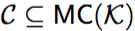
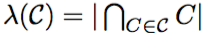
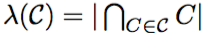
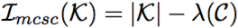

 is an MC-cover if  .
An MC-cover C is normal if no proper subset of C is an MC-cover.
A normal MC-cover C is maximal if  is maximal for all normal MC-covers.
.
An MC-cover C is normal if no proper subset of C is an MC-cover.
A normal MC-cover C is maximal if  is maximal for all normal MC-covers.
Define the MCSC inconsistency measure via  for any maximal MC-cover C.
For a discussion on the above measure see [Ammoura:2015].